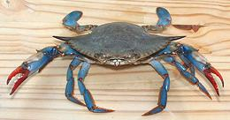
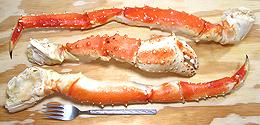

SAFARI
Users
- General & History
- Eating Crab - and Tools to use
- Buying and Storing Crabs
- Varieties - with cooking details.
- Health & Nutrition
- Links
General & History
Crabs are Crustaceans, a subphylum of the Arthropods (insects and spiders are other subphylum). Specifically they belong to the Malacostraca branch of crustaceans which also includes shrimp, prawns, lobsters and sow bugs.
They are called "decapods", meaning they have 10 legs. The front pair is modified with strong claws and in some species the rear pair is modified for swimming.
Crabs are built the same as shrimp, except the carapace (head of shrimp) has become very wide, the abdomen (tail) has atrophied, flattened and folded under the body along with all the swimming feet (Pleopods). The abdomen now serves only a reproductive role and is wide on females for holding eggs and narrow on males. See (C7) and (C8) for more on decapod and crab anatomy.
Eating Crabs
Eating crabs requires some tools due to their hard shells and the way their meat is divided into small compartments. In any case, it's going to be messy and barbaric - highly satisfying but not suitable for elegant dinners.
For small crabs steamed whole it's traditional to use yesterday's
newspaper for a tablecloth so the whole mess can be rolled up and
disposed of once they've all been eaten.
- Totally worthless: red crab cracker at upper right. Any part small enough to fit in this abomination is too small and flexible to be cracked, but it came with 4 crab picks which are more useful at about 2006 US $6. Keep the picks and toss the claw.
- Oxo Crab Cracker: elegant, extremely well made and can actually crush claws (and I do mean "crush") but is too wide for any other parts. At 2006 US $10 it's a colossal waste of money.
- Nutcracker: (not shown) restaurants serve crabs with a cheap metal nutcracker to minimize theft. It's about as effective as the Oxo, but a bit more difficult to handle.
- Kitchen Shears: the crab eating tool without parallel. Cuts crab parts neatly both crosswise and lengthwise - it's the only way to go!
- Crab Picks: The shovel end is very useful particularly for the body parts of smaller crabs. Haven't figured out any use for the forked end. Four of them came with that useless red claw at about US $6.
- Chopsticks: extremely useful for pushing meat out of tubular legs and other parts - and for dipping small pieces of crab into whatever sauce you are using. Highly recommended.
Crabs, crab legs and claws are generally eaten with some sort of dip. Here are some examples, with my own preference listed last.
- Joe's Mustard Sauce: The sauce served with crab claws at the famous Joe's Stone Crab restaurant in Florida. Clearly this fine establishment serves it's customers well. Personally though, when I pay for crab I hope to taste crab. I find this sauce tasty and well suited to celery sticks, cold meats and spreading on sandwiches.
- Melted Butter and Lemon Wedges: pretty good, but skim off the white foam that forms at the top, it's way too salty and detracts from the crab. The lemon wedges are a little awkward to apply - maybe a tiny dish with lemon juice in it to dip before the butter?
- Vinegar: Presumably best quality white wine vinegar, but I find straight vinegar a bit, well, vinegary. Maybe white balsamic instead?
- CG Crab Dip: - here the acidity of the vinegar is cut to 1/3 with white wine and a little warm spice is added. Best feature is that you can still taste the crab!
Buying & Storing Crabs
Buy crabs live (unless you're buying them already cooked). Crabs spoil extremely quickly when dead and there's no way to tell how long they've been dead. Don't cook dead crabs.
The exception to the dead crab rule is if you put a bag of crabs you knew were all alive in your refrigerator overnight you can still cook them in the morning. They'll be dead from the cold and they'll be "fresh crabs" rather than "live crabs" but they'll still be plenty edible.
Live crabs can survive several days out of water if conditions are correct (how long depends on species). Keep them at about 50°F/10°C in a moist environment but with decent air circulation. Covering with damp straw or something similar works well.
When buying cooked crabs (the only way larger, spindlier species are sold), buy from a reliable source with plenty of seafood turnover.
If your supermarket has crab legs or "clusters" displayed in the case and in shrink wrapped trays, if the price is anywhere near the same, hail the fish man and buy from the case. Those in the trays may be weighed frozen, and exude water as they thaw and you may find you're paying for some pretty expensive water in the tray.
Killing Crabs
Since you bought them live, you have to kill them yourself. I can assure you the crabs don't enjoy this any more than you do. There are a number of ways:
- Plunge the crab face first into plenty of rapidly boiling water. All motion stops in less than a second - the brain is right up front.
- Sedate the crab and split from the bottom as shown in the instructions for Dungeness Crabs or Rock Crabs. Motion stops in less than 10 seconds.
- Sedate the crab and Split the chassis away from the shell as shown in instructions for Blue Crabs. Motion stops in about one minute but the crab is probably not conscious.
- Refrigerate overnight. Time of death will be uncertain but they'll be refrigerated the whole time.
- Softshell Crabs Only: with kitchen shears cut off the face behind the eyes. This should take the crab out very quickly.
- Some say to put the crab in water and slowly warm it up and the crab will "go to sleep". I tried this and the crab got plenty agitated so I discontinued the experiment.
- Steaming live is the way it's done in the Chesapeake Bay area. Dropping a basket of live blue crabs over rapidly boiling water and putting a lid on is probably fairly quick but would seem more painful than other methods.
Varieties of Crab
Asian Shore Crab
[Japanese shore crab; Hemigrapsus sanguineus]
This crab is native from Peter the Great Bay in far south eastern
Russia down to Hong Kong. It is now a serious invasive pest along the
northeastern coast of the United States, and has also been found in Texas
and the Pacific Northwest. Best control is to eat them. Unfortunately,
Americans, especially along the east coast, are not accustomed to eating
tiny crabs shell and all. It has also infested Europe from the North
Sea down the coast of France and around England. This crab is very like
the Green Tidal Crab Varuna litterata except not configured for
swimming. In the Philippines they share the name, Talangka, and the same
recipes are used. It can be found in several colors, from green to
orange-brown and purple. This crab can grow to a carapace width of around
1.6 inches but is more commonly 1 inch or a little over. For culinary
details see
Green Tidal Crab.
Photo by Gall L. contributed to the Public Domain.
Blue Crab
 [Callinectes sapidus]
Blue Crabs are found from Nova Scotia to northern Argentina, but are most abundant from Massachusetts on down and around the coast to Texas. They are particularly important to the economy in the Chesapeake Bay area of Maryland and Virginia. They can grow to about 9.1 inches across the points of the shell, but the photo example was 7 inches and weighed 8-3/4 ounces.
This is a highly mobile "swimming crab" which can travel a couple
hundred miles seasonally. It is very active and feisty and you don't
want to get pinched because the claws are very strong. Populations
in the Chesapeake Bay have been declining and major experimental
hatcheries have been established to try to reverse the decline. The
demand is so great crabs are now being imported from as far away as
Texas.
Details and Cooking
Chinese Mitten Crab
[Shanghai hairy crab; Dàzháxiè, Shànghai máoxiè Eriocheir sinensis]
Mitten crabs are native to East Asia, from Korea south to Fujian, China.
They are considered a serious invasive in North American and Europe,
but have failed (2019) to establish significant populations in North
America. These are freshwater crabs, but must migrate downriver to
brackish waters to spawn. They can grow to 3.9 inches across the
carapace.
Details and Cooking.
Dungeness Crab
[Cancer magister]
This popular crab is found from the Aleutian Islands of Alaska south to Santa Barbara, California and is the most economically important crab on the U.S. West Coast. The photo specimens are 6-3/4 inch across the carapace, a typical market size. The rear one was purchased pre-cooked and the front one live. These crabs are also sold as "clusters", half a crab chassis with legs and claws attached, and about 60% of the catch is rendered into canned and frozen crab meat.
These crabs can grow to 10 inches across the carapace but few get the
chance because the fishery is very efficient, with between 80% and 90% of
legal crabs caught in any particular year. Legal crabs are sexually
mature males greater than 6-1/4" across the carapace. By then they're
about 4 years old and have had plenty of time to knock up enough females
to keep the population going. Nearly all the California / Oregon /
Washington catch is between 15 November and New Years Day, though the
season goes on to mid July. There are other smaller catches through the
crab's full range which keep them available much of the year. These
crabs are not endangered.
Details and Cooking
European Green Crab
[Shore Crab; Carcinus maenas]
This crab is native to Europe, from Iceland and central Norway down to Morocco. It is a serious invasive along the northwest Atlantic coast from Newfoundland, Canada to South Carolina, United States, and along the east Pacific coast from Vancouver Island, Canada down to central California. On the U.S. east coast it is battling with the invasive Asian Shore Crab. It has also invaded southern Australia, the southern tip of Africa, and a small area in southern Argentina. It is green after a molt, but becomes increasingly brown / orange as it nears its next molt.
This is a small crab, growing to only 3-1/2 inches across the
carapace, limiting its culinary usage. In the northeast region of the
United States, there are efforts, with some success, to develop culinary
uses for these crabs, and one chef is using crab stock made from them
in recipes. They are also harvested for use as bait. Native crabs have
beeen effective in controlling this crab in some regions. Adult crabs
are often 20 to a square meter on the east coast, but only about 0.3
crabs per square meter in infested west coast regions. We have tougher
native crabs on the west coast.
Photo by CSIRO Marine Research distributed under license
Creative Commons
Attribution-ShareAlike v3.0 Unported attribution required.
Green Tidal Crab
[River Swiming Crab, Sargassum Crab, Peregrine Crab; Talangka, Shore Crab, Kalampay, Kalang (Philippine); Bodhi (Hindi); Varuna litterata]
This crab is found in brackish waters and far up rivers. It is found
from the east coast of Africa to the Mid Pacific Islands, ranging from
Japan to southern Australia. This crab is very like the Asian Shore Crab
Hemigrapsus sanguineus and they share the name. Talangka. in the
Philippines. Both are about the same size and have a blocky carapace
with three teeth, but this one has hairy legs to help with swiming and
the mouth parts are different. It can be found in several colors.
Details and Cooking.
King Crab
 [Alaskan King Crab, Red King Crab, Paralithodes camtschaticus | Blue King Crab, Paralithodes platypus | Golden King Crab, Brown King Crab, Lithodes aequispinus]
King crabs are not actually crabs but belong to another family of Decapods, the Lithodidae. They are thought to have evolved from hermit crabs (also not true crabs). Because of their size and spindly shape they are cooked immediately upon capture and broken into legs and claw arms which are shipped (generally frozen) to markets.
The three crabs listed in the title are all from Alaska, the Blue King being the largest, the Red King second largest and the Golden King considerably smaller (thus lower in price). All three are marketed as "Alaskan King Crab" and all are pretty much the same red color when cooked so you can't tell them apart in the market. The larger of the legs was 18 inches long and weighed 14 ounces. The claw was 9.8 inches long and weighed 12.5 ounces. Blue King legs can be over 28 inches long.
This crab is difficult to catch and is not considered endangered. It
was introduced to the Barents sea off Russia in the 1960s and the
population there has exploded and spread as far away as Norway, to the
dismay of ecologists and many fishermen, and the delight of others who
enjoy the high price they fetch.
Details and Cooking
Mangrove Tree Crab
[Wa Kee (Teochew Chinese); Episesarma singaporensis (red claws) | Episesarma chengtongensis (red and white claws) | Episesarma versicolour (purple and white claws); all of Family Sesarmidae]
These crabs, which can grow to about 2 inches across the shell, live in
the mangrove forests of Southeast Asia. When the tide comes in, they climb
mangrove trees to just above the water level, though they can climb as
high as 20 feet in search of leaves to eat. They are considered pests in
mangrove plantations because they eat the mangrove seedlings. The
Teochew Chinese of Southeast Asia catch them, keep them in clean water
for two days, then pickle them live in vinegar and/or soy sauce. They are
served whole. In Thailand they are used as an alternative to
Rice Paddy Crabs for salted crabs
and crab paste, and they are also fried whole.
Photo by Lip Kee Yap distributed under license
Creative Commons
Attribution-ShareAlike v2.0 Generic.
Pea Crab
[Pinnotheres pisum]
These crabs, found pretty much worldwide, are parasites on bivalve
mollusks and some other sea animals. They are totally dependent on
the host for food, oxygen and protection. They usually do little
damage to the host, which is still completely edible - just eat the
crab or discard it, as you please. The photo specimen was 0.41 inches
across the shell, and was found inside an Asian Littleneck Clam.
Details and Cooking.
Queen Crab
- see Snow CrabRice Paddy Crab
 [Black Crab; Boo Kem (Thai, salted); Ba Khía Nguyén Con
(Vietnam, salted); Somanniathelphusa sp. of family
Parathelphusidae]
[Black Crab; Boo Kem (Thai, salted); Ba Khía Nguyén Con
(Vietnam, salted); Somanniathelphusa sp. of family
Parathelphusidae]
There are other crabs called "Black Crab", but the very small crabs of
this genus (up to 2 inches across the shell) are very important
commercially in Southeast Asia. They are salt fermented and ground up to
make Crab Paste, and are salt fermented whole and packaged for sale as
"Salted Black Crabs". They are popular in Laos, Issan (northeast
Thailand) Vietnam and Cambodia. When they feel threatened these crabs
wave their claws threateningly and blow a screen of bubbles.The photo
was taken in Cambodia, exact species not known.
Details and Cooking.
Rock Crab - Pacific
 [Red Rock Crab; Cancer productus]
[Red Rock Crab; Cancer productus]
A heavy, hard shelled bottom crab with a bad disposition and very strong claws that can pinch right through heavy neoprene gloves. They live in rocky areas along the Pacific coast of North America from Alaska to Baja and can grow to nearly 8 inches wide across the carapace. The photo specimen was a male 6 inches across the carapace and weighing 1 pound 13oz (1.8 pounds).
This crab is not to be confused with the very common Atlantic rock
crab (Cancer irroratus) which is much smaller and lighter of
build, or the small, fast moving Australian red rock crab
Plagusia chabrus.
Details and Cooking.
Soft Shell Crab
Soft Shell Crabs are most commonly Blue Crabs (due to availability and size). To grow, a crab must periodically molt its entire exoskeleton and grow a new larger one. After the molt the crab is highly vulnerable for a period of days until the new shell hardens. This is the "soft shell" crab of commerce. Details and Cooking
Snow Crab
[Alaskan Snow Crab, Chionoecetes opilio and other Chionoecetes species]
Snow Crab is too large and spindly to sell fresh, so, like King Crab, they are cooked immediately after capture and sold as "clusters" of legs and claws attached to the meaty part of the body. The photo cluster was 13 inches and weighed 6.7 ounces.
C. opilio is found in the North Atlantic from Maine to Greenland
and in the Pacific from Canada through the Bering Sea and the Arctic
Ocean around to the Sea of Japan. Several other Chionoecetes
species also live in that Pacific range and as far south as California.
Details and Cooking.
Spider Crab
- see Snow CrabStone Crab
[Florida Stone Crab, Menippe mercenaria]
Stone crabs are found from North Carolina down and along the Gulf coast as far south as Belize. They are small bodied with a carapace 4 inches in width when fully grown. The body has very little meat, but this crab has outsized claws with enough strength to break oyster shells.
The fishery is unique and highly regulated in the United States. Live
crabs are taken only during season and if both claws meet a size standard
the larger is twisted off at a joint and the crab is returned to the
water to grow a new claw (takes about a year). Taking whole crabs is
illegal, as is taking both claws.
Details and Cooking.
Health & Nutrition
Crab is an excellent sources of chromium and selenium and a good source of several other important minerals. It is high in vitamins, particularly B12, high in protein and very low in fat. It has less than 1/3 the cholesterol of shrimp (about the same as salmon), but most people don't absorb much cholesterol from their food anyway.
Crab is too low on the food chain to contain significant amounts of mercury.
Links
- C1 - Blue Crabs - BlueCrab.org - extensive information on Blue Crabs.
- C5 - Dungeness Crabs - Dungeness Community Website - Dungeness crab information.
- C7 - Decapod Anatomy - Wikipedia - illustrated decapod anatomy.
- C8 - Crab Anatomy - Virginia Institute of Marine Sciences - crab anatomy with illustration.